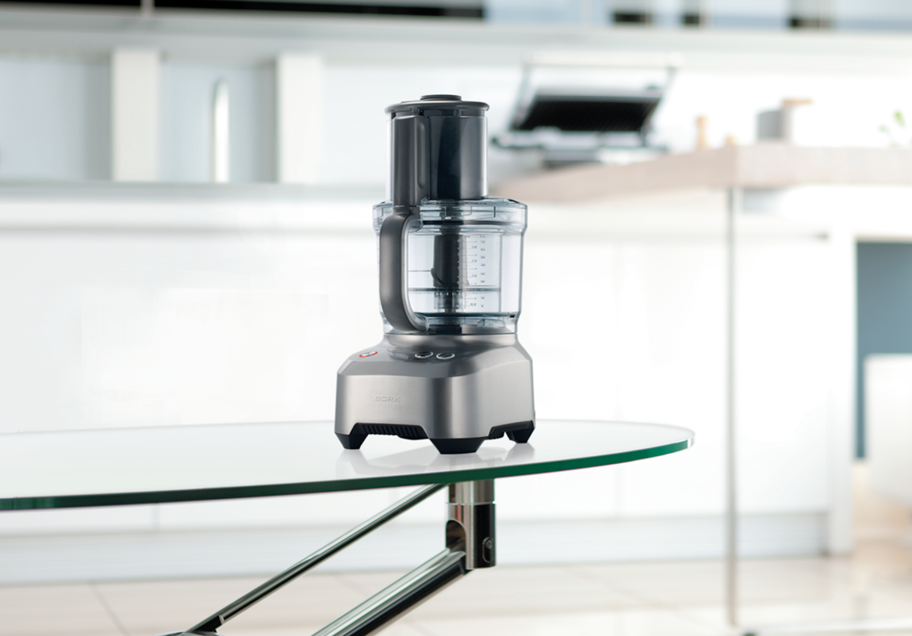
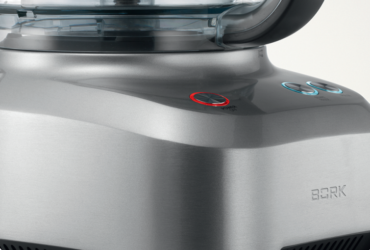
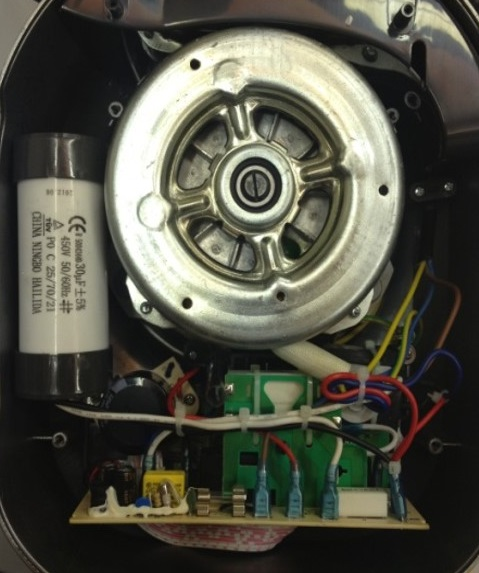
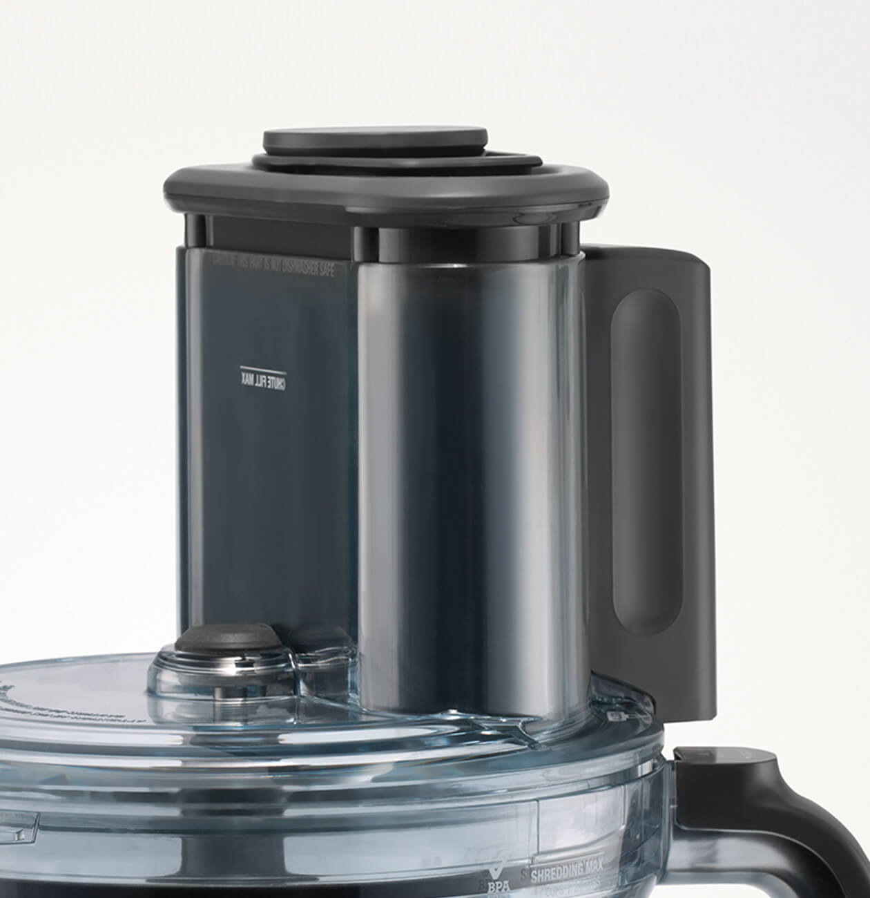
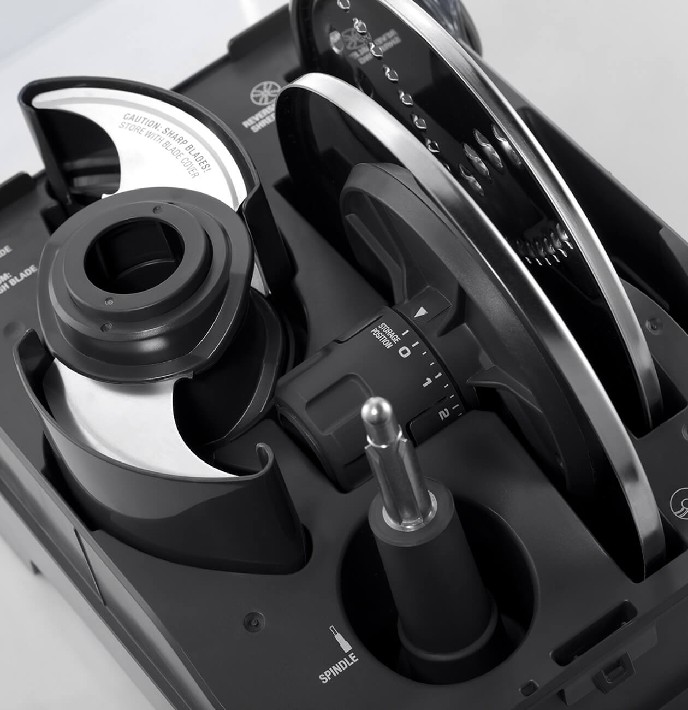
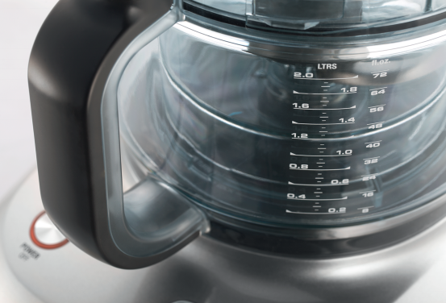
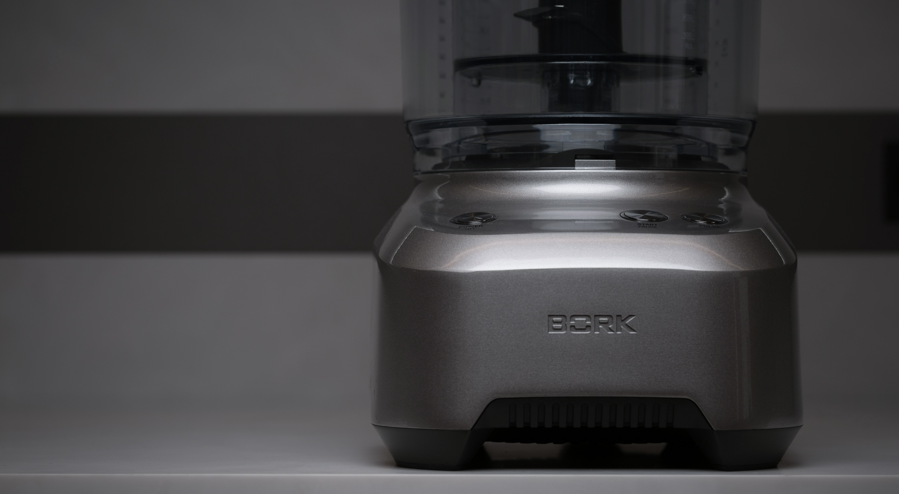
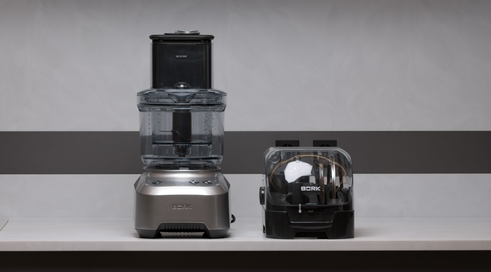

Кухонный комбайн B803
Мощный индукционный двигатель
Комбайн оснащён асинхронным - конденсаторным двигателем мощностью 1000 Вт. Встроенный конденсатор обеспечивает большой пусковой ток, как следствие комбайн способен быстро набрать обороты от нуля до максимума не испытывая при этом нагрузки, приводящие к износу, при отключении двигатель останавливается мгновенно. Мощность двигателя регулируется датчиками в зависимости от объема и степени твердости продуктов.
Вы можете быстро и эффективно смешивать, измельчать, резать, шинковать продукты разной консистенции для самых разнообразных блюд.
Металлическая крыльчатка охлаждения двигателя обладает звукоотражающим кожухом. Вы не разбудите домашних, готовя питательный салат на завтрак.
Широкий загрузочный желоб
Широкий загрузочный желоб позволяет экономить время: многие продукты Вы можете загружать целиком, не разрезая их на части.
Универсальный набор насадок и ножей
В комплект кухонного комбайна входит контейнер/бокс для хранения всех принадлежностей. Комплект насадок предоставляет большой выбор возможностей для приготовления разнообразных блюд – от салатов до кондитерских изделий. Многофункциональные насадки и ножи заменят ряд приборов на Вашей кухне: миксер, ломтерезку, терку, блендер, мясорубку и другие устройства.
Насадка с регулировкой толщины нарезки
24 регулируемых положения толщины нарезки: от 0,5 мм до 8 мм. Предназначена для нарезки всевозможных продуктов: от овощей и фруктов для салата до сыра и колбасных изделий для бутербродов. Толщина ломтика зависит от заданного значения, а форма — от расположения в загрузочном желобе.
Система ножей с четырьмя лезвиями QUAD BLADE
Система ножей используется для измельчения мяса, фруктов, овощей, орехов, сухофруктов, льда, при приготовлении паштетов, соусов, супов-пюре, детского питания, кондитерских изделий, а также для получения панировочных сухарей. Конечная консистенция определяется типом продукта и продолжительностью обработки.
При обработке более плотных ингредиентов используйте кнопку PULSE (импульсный режим).
Система ножей укомплектована специальным защитным футляром для хранения, благодаря которому лезвие ножа останется острым и в то же время сбережет ваши руки от случайных порезов.
Двусторонняя тёрка
Обеспечивает мелкое измельчение продуктов с одной стороны лезвия, и более крупное —с другой. Подходит для обработки сыра твердых сортов (например, пармезан), овощей и фруктов.
Нож измельчитель
Нож-измельчитель может использоваться для резки, смешивания и обработки овощей, зелени, шоколада и даже льда. За счет уменьшенного радиуса ножей используется с малой чашей.
Хорошо подходит для рубки зелени, овощей.
Нож для смешивания плотного теста
Идеально подойдёт для приготовления теста для хлеба, пельменей, пиццы, пирогов, кексов, выпечки.
Чаша объёмом 2 литра
Вместительная рабочая чаша объемом 2 л с удобной ручкой для переноса просто и надежно фиксируется на основании с двигателем. Привод чаши металлический, посадочная часть на корпусе моторного блока выполнена из высокопрочного композита. Чаша снабжена съемной крышкой для защиты от брызг.
Системы безопасности
Двигатель защищен от перегрузки автоматическим выключателем, срабатывающим при перегреве и перегрузке OVERLOAD PROTECTION.
Если чаша установлена неправильно двигатель не запустится.
Если во время работы извлекается толкатель, комбайн автоматически останавливает работу и переходит в режим PAUSE.
Технические характеристики

Напряжение: 220–240 В
Частота: 50 Гц
Мощность: 1000 Вт
Габариты (В×Ш×Г): 425×190×245 мм
Вес: 9,3 кг
Сделано в Китае